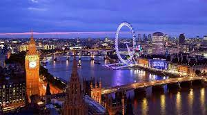

london
London is the capital and largest city of England and the United Kingdom, with a population of just under 9 million.[1] It stands on the River Thames in south-east England at the head of a 50-mile (80 km) estuary down to the North Sea, and has been a major settlement for two millennia.[9] The City of London, its ancient core and financial centre, was founded by the Romans as Londinium and retains boundaries close to its medieval ones